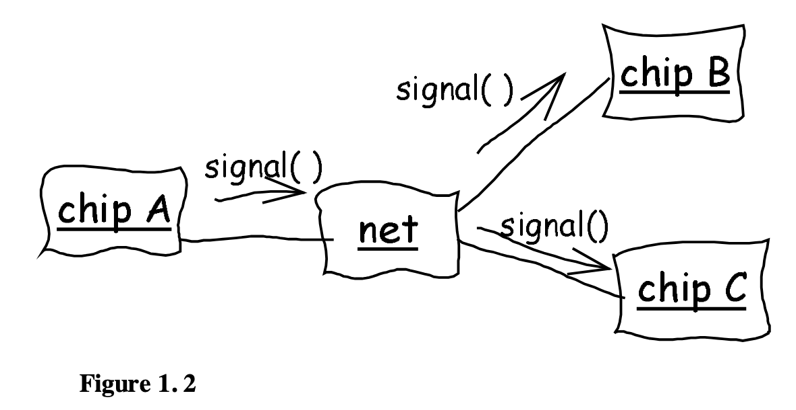

Update 2026-03-06: I first wrote this back at the start of 2025. Now I’ve rewritten and broken this post up into two, one here and one on the VocalPy developer’s blog, based on feedback from folks in the US-RSE and pyOpenSci communities: Ben Fulton, Hector Correa, Kris Armeni and Warrick Ball, and Felipe Moreno. Special thanks to Alex Chabot-Leclerc for reading closely and talking through the earlier version.
In this post I hope to convince you that you should care about domain-driven design. It falls into the category of “me writing about how my thinking has evolved about research and software”.
You might read about domain-driven design and think “I already do this. Why do I need to name it and formalize it?” I am not claiming this is a radical new idea. What I hope to convince you of is that, sure, domain-driven design is just as obvious as it sounds, but you should be thinking about it more anyways.
So: first I’ll introduce domain driven design, then I’ll explain why I think it’s worth thinking about it more, even if you think it’s something you already do.
What is domain-driven design?
First, let me introduce domain-driven design, and tell you why you might care about it. (From here on out I’ll write “DDD” to avoid making you read “domain-driven design” a thousand times.) Sometime in 2022-2023, I read Domain-Driven Design by Eric Evans, and I got really excited about it. If you do nothing else, read the first chapter of Evans’ book, where he relates the story of how he worked with some electrical engineers to design software they would use to design printed circuit boards (AKA PCBs).
At the beginning, he makes mistakes. He tries to understand their jargon word-for-word. Then he asks them to specify in detail what they think the software should do. Neither of those approaches were ever going to work well. Finally he hits upon the idea of asking them to draw out diagrams of their process and how the software should interact with it. These are simple, rough box and arrow sketches as he shows.

Notice what is happening here: this is not just a developer creating a UML diagram to show to other developers. This is software engineers and domain experts developing a pidgin language together. They use this pidgin to talk about the domain problem they are trying to solve with software.
It’s an interesting story for a couple of reasons. First of all, you have a feeling that he is almost an anthropologist, going into this unfamiliar tribe of electrical engineers so he can learn their culture. I think this is a familiar feeling for anyone who has tried to translate some real-world domain into software, even if it’s part of a culture they feel like they belong to. Second, you really get a feel for his process. If you have ever gone through the process of designing software for some real-world domain, I bet the story really resonates with you.
Now, you might be thinking, “write code in terms of your domain, yeah, sure, everybody does that”. I got really excited reading this stuff, and told people about it at the job I had at the time. I made a big deal of presenting parts of the book, and talking about how we could use this approach for what we were working on. And I got this very underwhelmed response of “Yeah, we sort of already do that. Aren’t you just describing object-oriented programming?” Yes, but no! I’ll come back to the “no, we aren’t doing that” below, but first, the yes. Yes, Evans is writing about object-oriented programming (henceforth, OOP), but the key thing is not just OOP, it’s which objects to make–the design! The important part is not the objects, but that the objects are grounded in the domain. We should realize that this is a design problem, and be very explicit about it! The domain should be at the front of our mind at all times, so that when we iterate on the design of our software it is easier for domain experts to learn and use!
Now, the “but no”: DDD isn’t just doing OOP, but constrained by your domain. Yes, we all think of the domain when we write our code, more or less subconsciously. But Evans advocates for a specific development process. He says this process is required for his approach to design to work. He sees it as a form of extreme or Agile programming. If you’re not familiar with those, the important thing to know here that they are more iterative than previous approaches, that focused on “elaborate development methodologies that burden projects with useless, static documents and obsessive upfront planning and design”, as Evans puts it. Instead, he focuses on writing code that has a bare bones implementation he can test right away. “Development is iterative.” Of course, this is one place where Python, my main programming language, shines. It’s really easy to iterate interactively in a Jupyter notebook with a bare-bones implementation of your sketch of an API. Of course, later you should do some proper engineering instead of living in Jupyter notebooks, so you don’t have to worry about someone giving a preachy conference talk that condemns you for your naughty software development practices.
Evans’ other requirement for the development process is that “[d]evelopers and domain experts have a close relationship.” If you are a researcher who programs, well, hopefully you already have a close relationship with yourself. And with your collaborators and colleagues. This second requirement naturally gives rise to one of the key ideas from the book, that of ubiquitous language. This is what I called a pidgin above. It’s a language that the domain experts and software developers arrive at together through the iterative process of development. The words in this ubiquitous language correspond to key concepts in the domain that the software needs to capture, the things that developers and domain-experts realize they should focus on, as they iterate. Ubiquitous language “embeds domain terminology in the software systems we build”, as Martin Fowler puts it in this post. It’s this continous process of developer and domain expert iterating together that really appeals to me.
I’ll say why DDD isn’t just OOP another way, paraphrasing Alex Chabot-Leclerc (who gave me feedback on earlier versions of this post). Ideally, the software developer should work backwards from the needs of the end user. DDD provides a process and guidelines for doing so. This mitigates the tendency of software developers to come up with computer-science-shaped solutions to problems. Those solutions make sense to them, but they are very hard for non-computer scientists to learn and reason about. A scientist cares about concepts from their domain, technical terms that have very nuanced meanings. At the end of the day, a scientist using scientific Python only cares about a Numpy array inasmuch as it makes life easier when they do an analysis. Do not make your end user think in terms of csv files, Parquet formats, and json blobs. It’s bad enough that I have to think so much about the format of csv files, if at all possible I should ameliorate the need for other humans to do so.
Domain-driven design by example
If DDD is so great, why isn’t everyone doing it? In other words, you might be wondering what some examples of DDD are.
Let me first say I would be happy to learn that this is all old news to a lot of software developers. From my vantage point in the world of scientifc Python, I’m not so sure. I can give you examples of Python APIs that I could say have the “feel” of what I would expect DDD to produce, even if the developers did not think of themselves as “doing DDD”. I can also link to my own post explaining how I am trying to use DDD for scientific software (below), comparing and contrasting that with the (mostly implicit) rules for scientific Python APIs. But as far as I know, this is not a well-known idea (and maybe that means I shouldn’t bother thinking about it so much).
To give you an example of a DDD-like Python API, I’m going to quote directly from a post I’ve linked to before, in my post about structuring Python packages for scientific software. Ostensibly, the post I’m linking to is about API design for Python. It compares and contrasts the API of the requests library with the urllib library built into the Python standard library.
Let’s start with some code. What do you think this snippet does?
manager = urllib.request.HTTPPasswordMgrWithDefaultRealm() manager.add_password(None, 'https://httpbin.org/', 'usr', 'pwd') handler = urllib.request.HTTPBasicAuthHandler(manager) opener = urllib.request.build_opener(handler) response = opener.open('https://httpbin.org/basic-auth/usr/pwd') print(response.status)As you probably figured out, it makes an HTTP request to an httpbin.org URL with a username and password.
But is urllib.request a good API?
No, it’s terrible! You have to learn about “managers” and “handlers” and “openers”. There are two ultra-long names, HTTPPasswordMgrWithDefaultRealm (what a mouthful!) and HTTPBasicAuthHandler.
This kind of code is why the Requests library was born, back in 2011. In fact, if you’ve looked at the Requests documentation, you probably know that this example is taken from the comparison linked at the top of their docs (updated based on an official how-to).
Here’s how you’d make that same HTTP call with the Requests API:
response = requests.get('https://httpbin.org/basic-auth/usr/pwd', auth=('usr', 'pwd')) print(response.status_code)Now that’s a nice API.
From a DDD point of view, the important thing here is that the requests API is designed at the level of detail that someone working with HTTP requests is thinking about. They make a request, they get back a response. (Thank you again to Alex Chabot-Leclerc, this time for suggesting requests as an example.)
Wait; is email a domain? Isn’t it just a weird sub-field of computer science, kind of like how cooking and baking could be considered sub-fields of organic chemistry? Yes, you’re right. I’m telling you that you should think about DDD more, but I can’t give you many good examples of it. The other example Alex suggested to me was beautifulsoup, and I agree that package has a user-centric API, but now we’ve moved from the email to another weird branch on the family tree of computer science: HTML and XML. The best example I have is my own blog post on how I’m using DDD as I develop VocalPy. The second best example I could think of in scientific Python was geopandas. Generally, I think a lot of pyOpenSci packages could be seen through a DDD lens. But I’m pretty sure the developers don’t think of themselves as “doing DDD”. In earlier versions of this post, I had a mini-rant about, if you feel like everybody already does DDD, then show me! Put the DDD-style diagrams in your docs, let me see how the design evolved! Literally I was advocating that researchers writing scientific software include DDD-style diagrams in their docs, that specifically illustrate changes over time. Okay, maybe adding an illustrated history of your API to your docs won’t help users much. But I do think it would be really interesting, if you care about the design of scientific software, to look at a big dataset of design docs across time for multiple projects,
and try and make sense of them within the framework of DDD.
Domain-driven design is not new, and you should think about it more anyway
Ok, so now let me circle back around, talk about why, sure, DDD is not a new idea (as Evans himself acknowledges right at the start of his book), and why you should be doing it, or doing even more of it. This is where I come back to the “no” part of “Do we already do this? Yes and no.” As you can tell, I’ve gotten this reaction before: “so, yeah, we already do that”.
Let me reiterate, I know these ideas are not new. I now know for sure they’ve been around longer than Eric Evans’ book, because I have been attempting to read yet another book, Structure and Interpretation of Computer Programs, AKA, SICP. I ended up finding DDD in SICP, and having to admit to myself that, yeah, this idea has been around forever. When I got to chapters 2 and 3, there I saw that we were talking about data abstraction and designing programs for modeling. Sound familiar? Let me quote you this bit from chapter 3:
One powerful design strategy, which is particularly appropriate to the construction of programs for modeling physical systems, is to base the structure of our programs on the structure of the system being modeled. For each object in the system, we construct a corresponding computational object. For each system action, we define a symbolic operation in our computational model. Our hope in using this strategy is that extending the model to accommodate new objects or new actions will require no strategic changes to the program, only the addition of the new symbolic analogs of those objects or actions. If we have been successful in our system organization, then to add a new feature or debug an old one we will have to work on only a localized part of the system.
Well there it is, DDD in a nutshell.
I hate to end on an appeal to authority, but I feel like, if a book as venerable and time-honored as SICP talks about DDD, if the authors think it’s worth discussing in the introductory sections of their chapters, then it must be an idea worth keeping in mind. (Such is the state of computer science that I am calling a book that’s less than half a century old “time-honored”.) I hope I’ve convinced you to think about domain-driven design just a little more.